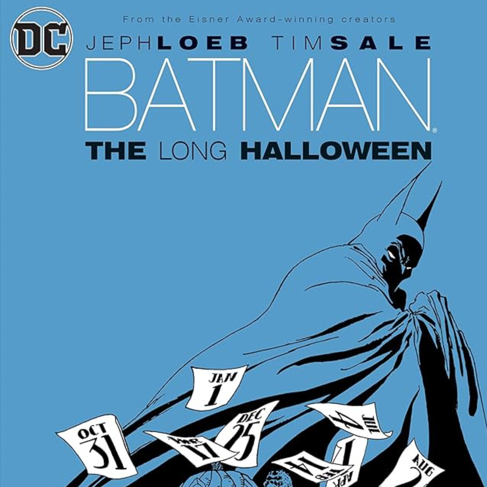
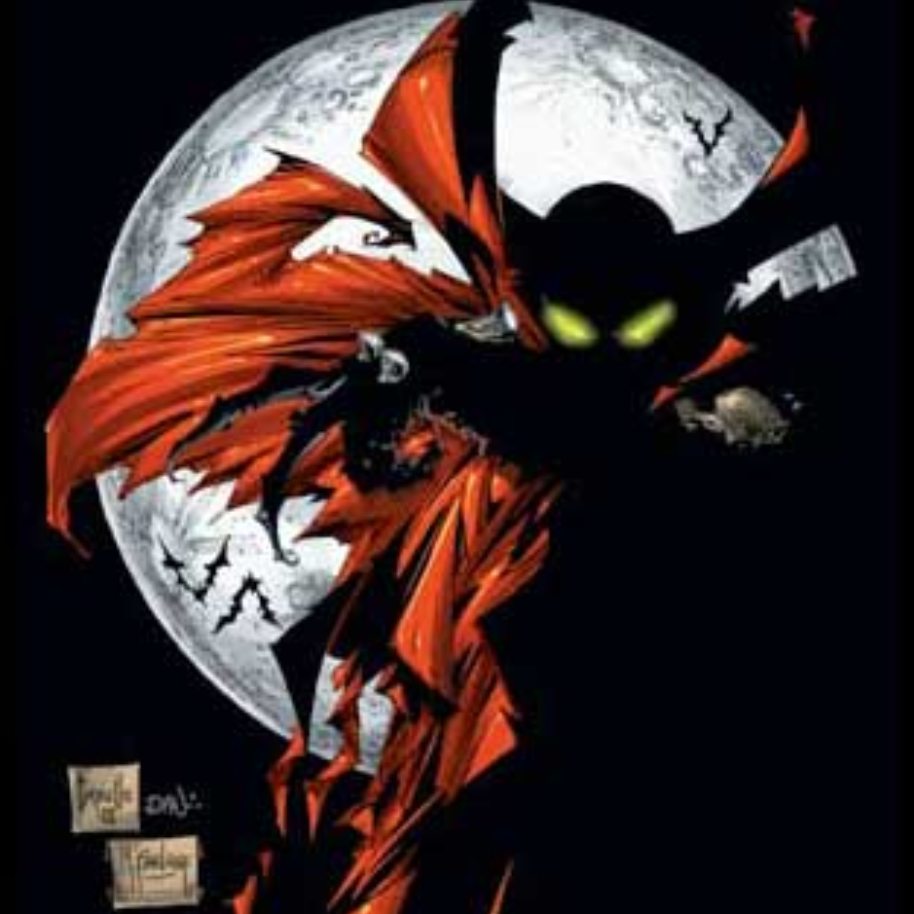
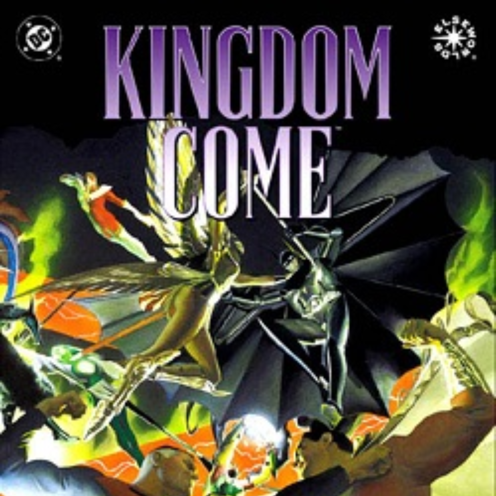

Comics
I haven't been able to read many comics, so this is a slideshow that shows the ones I've read, panels I've read online, etc.
Comics I've either read, looked at specific panels, etc.

Iconic Scene from any comic

Favorite Artwork from any comic
